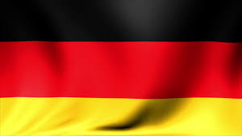
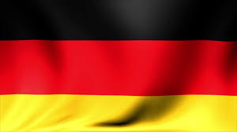

Reigning world champions Germany were sent crashing out of the World Cup after suffering a stunning 2-0 defeat to South Korea. The shock result sees them eliminated in the first round of the tournament for the first time in 80 years. Germany would have progressed with a win at the Kazan Arena but barely looked capable of scoring against the Koreans, let alone going on to successfully defend the title they won in Brazil four years ago (Continue...) .
GERMANY KO'D !
Trending
Argentina Through
The World Cup could not be left without Messi, and it isn’t. Not yet, anyway. Argentina advanced to the Round of 16 Tuesday in dramatic fashion, with a 2-1 victory over Nigeria, and thanks in part to Croatia’s 2-1 win over Iceland. But whereas Messi qualified for Russia despite his teammates, this time he needed a little bit of help. And he got it turning home from 10 yards at a slight angle after Ever Banega superbly found him from deep. His finish was out of the keepers reach.
Samba Boys Shine
They did so with the sort of occasionally dazzling performance that suggests they are growing into a tournament that they are one of the favourites to win, as they put behind them their slow start in Russia. Paulinho had deservedly put Brazil in front with a deft finish after a brilliant run from deep saw him convert Coutinho's through ball. Tite's team had to protect a lead for a 15-minute period at the start of the second half as Serbia went for the win.
The Dark Horses
Luis Suarez brought the host nation back down to earth with a bump in the city upon which the Russian space programme was forged. Conjuring images of the James Bond villain Jaws eating through cosmic cables in Moonraker, his curling free-kick launched Uruguay launched into the last-16 as Group A winners. Suarez ended both of his last two World Cup appearances in disgrace with a deliberate handball in South Africa and sinking his teeth into Giorgio Chiellini in Brazil